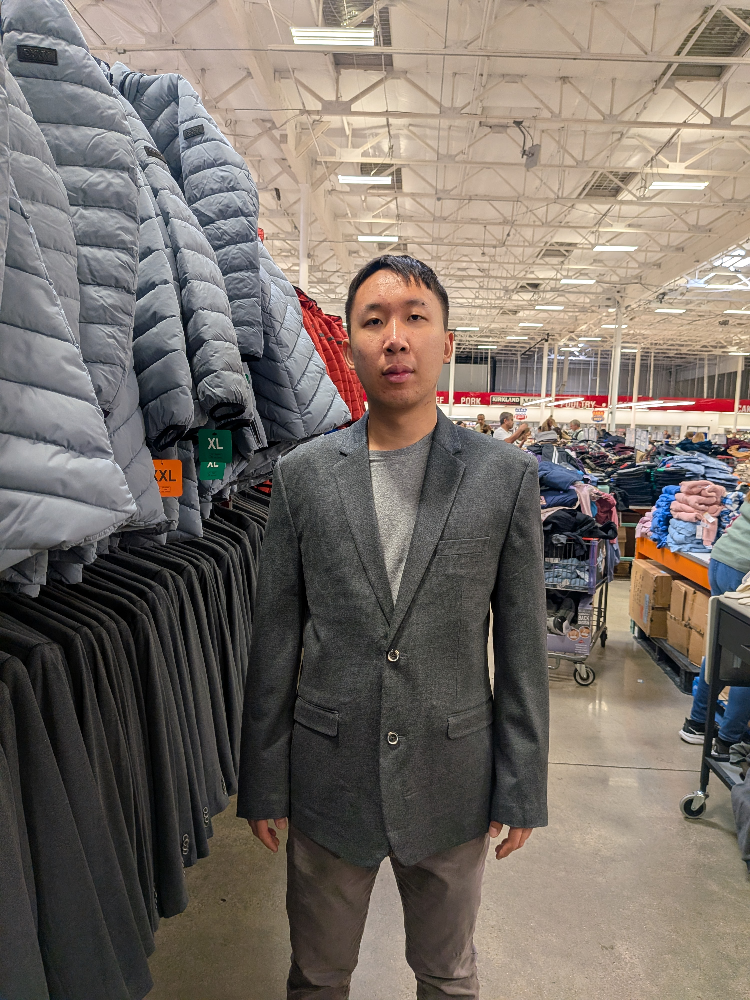

I'm someone who loves to run and learn new things, and I hope to be a researcher in the biotech industry when I graduate UCR. Some areas of interest include protein structure, its mechanisms in DNA translocation, and how applicable this is in cancer. I also really value the important of happiness. When I was in middle school, I ran a mile in 6 minutes and 43 seconds which seems like something to be proud of. This really inspies me to get outdoors more and enjoy the sunshine and fresh air in the SoCal area. I also really like to read and watch TV whether it journal articles, books, or True Crime Network. Finally, some foods I really love to eat include not only noodles whether its ramen, spaghetti, etc. but also tofu.